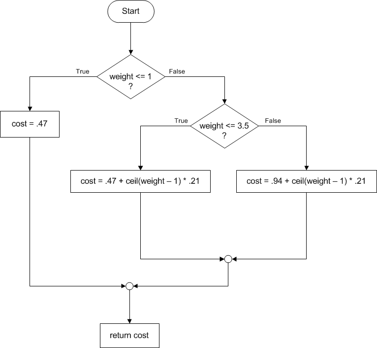
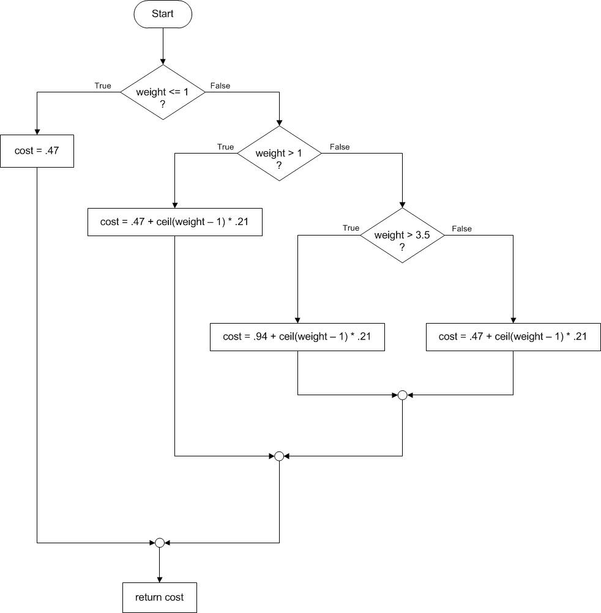
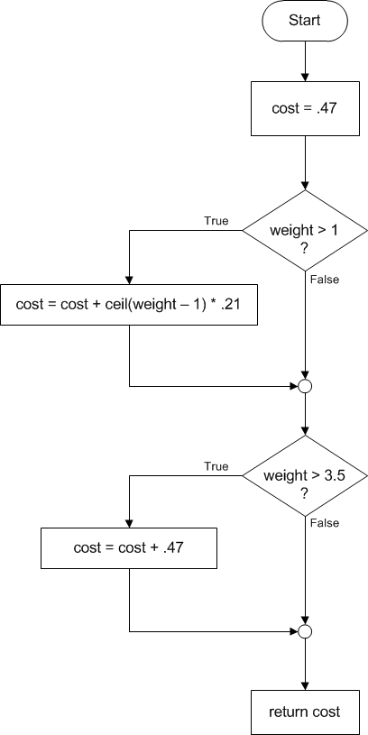

Representing conditional logic with flowcharts
Flowcharts are completely useless for designing large, realistic systems. However, sketching and reading a flowchart is a good way to practice with conditional logic. Here is one example of a flowchart for the postage-calculation problem:Flowchart 1 (below)

The same logic can be represented more compactly in pseudocode:
if weight <= 1
cost = .47
else
if weight <= 3.5
cost = .47 + ceil(weight - 1) * .21
else
cost = .94 + ceil(weight - 1) * .21
Notice that in pseudocode we use indentation to show the block structure of the logic. For example, the entire statement,
if weight <= 3.5
cost = .47 + ceil(weight - 1) * .21
else
cost = .94 + ceil(weight - 1) * .21
is "inside" the outer else block, that is, it only gets executed in the case that the weight is greater than 1. This fact is easier to see in the flowchart. Notice that the pseudocode describes exactly the same sequence of decisions and actions as the flowchart.
Below there are two different flowcharts that attempt to solve the same postage-calculation problem.
Flowchart 2 (below)

Flowchart 3 (below)
